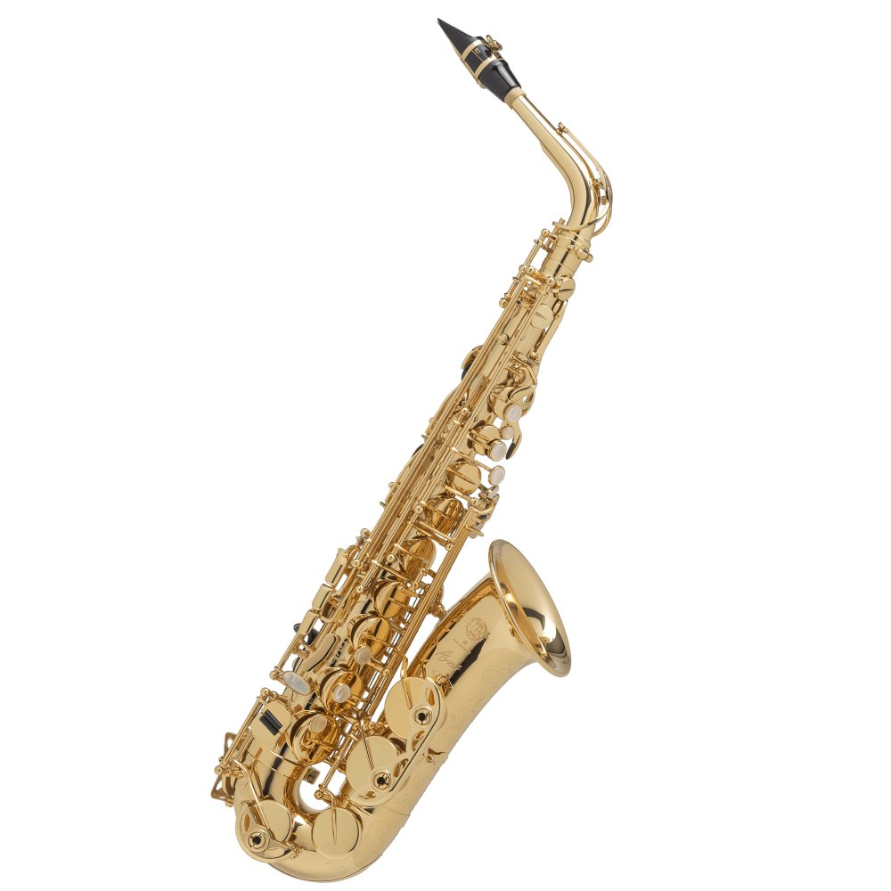

Soprano Saxophone
Soprano Saxophones are the least popular saxophones in this list, but there are still many players throughout the world. They are in the key of B♭ and have a range from A♭3 to E6. They share close visual resemblance to a clarinet.
Alto Saxophone
Alto Saxophones are the most popular saxophones in general and are the easiest for beginners to pick up and learn. They are in the key of E♭ and have a range from D♭3 to A♭5, but some models can reach A5 with the help of a high F# key.

Tenor Saxophone
Tenor Saxophones are the most common B♭ saxophone. They are in the key of B♭ and have a range from A♭2 to E5. They share close visual resemblance to a bass clarinet.
Baritone Saxophone
Baritone Saxophones are the lowest common saxophone. They are in the key of E♭ and have a range from C2 to A4. Their neck curves more than any other saxophone on this list but the detachable neck piece is almost indentical to that of the Alto Saxophone.